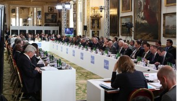

khatumo.net archive
The International Somalia Conference Final Communiqué.
Published without a byline
May 10, 2013

Final Communique of Somali Conference 2013
The Somalia Conference took place at Lancaster House on 7 May 2013, co-hosted by the UK and Somalia, and attended by fifty-four friends and partners of Somalia. We met at a pivotal moment for Somalia. Last year Somalia’s eight-year transition ended and Somalia chose a new, more legitimate Parliament, President and Government. Security is improving, as Somali and AMISOM forces, and their Ethiopian allies, recover towns and routes from Al Shabaab. The number of pirate attacks committed off the coast of Somalia has drastically reduced. The famine has receded. The diaspora have begun to return. The economy is starting to revive.
But many challenges remain. Al Shabaab is still a threat to peace and security. The constitution is not complete. Piracy and terrorism remain threats. Millions still live in Internally Displaced Persons and refugee camps. The country lacks developed government structures, schools, hospitals, sanitation and other basic services.
The Federal Government of Somalia has set out its plans to address these challenges in its Six Pillar Policy. At the Conference, the international community came together to agree practical measures to support the Federal Government’s plans in three key areas – security, justice and public financial management. The Federal Government presented its vision for the implementation of federalism, the adoption of a permanent constitution and holding of elections. We also agreed to work together to tackle sexual violence in Somalia.
We agreed that partnership between Somalia and the international community would form the basis of our future cooperation: the international community is committed to provide coordinated and sustained support for implementation of the Federal Government’s plans.
Political
We agreed that political progress remains the key to ensuring long-term stability for Somalia. We welcomed the Federal Government’s plans to resolve outstanding constitutional issues, including the sharing of power, resources and revenues between the Federal Government and the regions. We further welcomed the Government’s commitment to hold democratic elections in 2016. We reiterated our support for building capacity in democratic institutions throughout Somalia, beginning with support for local elections in Puntland next month.
We welcomed the dialogue on the future structure of Somalia that has begun between the Federal Government and the regions. We welcomed progress on forming regional administrations and looked forward to the completion of that process. We encouraged the regions to work closely with the Federal Government to form a cohesive national polity consistent with the provisional constitution.
We welcomed the IGAD Extraordinary Summit, held in Addis Ababa on 3 May under the chairmanship of Prime Minister Hailemariam Desalegn, which agreed a framework for dialogue on regional issues. We looked forward to further progress ahead of a meeting of IGAD in the margins of the African Union Summit in May.
We welcomed the dialogue between the Federal Government and Somaliland at Ankara in April 2013 to clarify their future relationship, building on the meeting at Chevening in June 2012, and welcomed the Ankara communiqué. We expressed our appreciation for the facilitating role played by Turkey.
We welcomed the protection of fundamental rights in the constitution, and the Federal Government’s commitment to uphold human rights, including by establishing an independent National Human Rights Commission. We further welcomed the Federal Government’s commitment to protect women and children, and take steps to end the involvement of children in armed conflict. We commended the recent visit of the UN Special Representative on Sexual Violence in Conflict to Somalia, and the plan for a Somali and international team of experts to make recommendations on how sexual violence could be addressed. We agreed on the important role a free and independent media should play in Somalia, and welcomed the Federal Government’s commitment to investigate and prosecute those responsible for the killing of journalists, and to promote press freedom.
Security
We shared the Federal Government’s view that security is the essential prerequisite for further progress in all other spheres. We commended the bravery and commitment of Somali and AMISOM forces, and those fighting alongside them. We expressed appreciation to countries contributing troops and police. We applauded the forces’ successes in freeing towns and routes from Al Shabaab. We reiterated the need for adequate and sustained funding for AMISOM, welcomed partners’ support to date, and called upon new donors to contribute.
We welcomed the Federal Government’s determination to take responsibility for providing Somalia’s security. We welcomed the Government’s plans for national security architecture and for developing its armed forces, including the integration of militias, and police. We welcomed the commitment to ensure that these security structures are accountable, inclusive, proportionate and sustainable; and respect a civilian chain of command, the rule of law, and human rights. We recognised the need for support to help the Government manage disengaged fighters.
We agreed to support implementation of the Federal Government’s security plans including through existing structures. We also agreed to provide assistance which should be coordinated by the Federal Government.
We welcomed the extension of AMISOM’s mandate for a further year in UN Security Council Resolution 2093. We noted the partial suspension of the arms embargo as recognition of political progress, and urged the Federal Government to fulfil its obligations to provide safeguards to protect Somalia’s citizens and neighbours.
We commended the Somalis and international partners for progress made in combating piracy over the last year including the efforts of Puntland and other regional or local governments and welcomed the Federal Government’s Maritime Resource and Security Strategy. We reiterated our determination to work with Somalia to eradicate piracy and other maritime crimes, and expressed our support for the Federal Government’s ongoing efforts to establish internationally recognised Somali waters, which will help it protect its abundant maritime resources and revitalise economic activities, as well as end toxic dumping and illegal fishing. We welcomed international support to develop Somali maritime security capacities and looked forward to the UAE conference in Dubai on 11-12 September. We welcomed partners’ continued efforts to bring to justice to those behind piracy and positive, ongoing initiatives in Somalia and the region. We recognized the need for these efforts to be complemented by work on land to generate alternative livelihoods and support communities affected by piracy.
Justice and Policing
We welcomed the Federal Government’s vision for equal access for all to a robust, impartial and effective justice system. We commended its justice action plan setting out immediate priorities for assistance, developed at the National Dialogue on Justice in Mogadishu, and applauded this inclusive dialogue with stakeholders.
We welcomed the Government’s four-year action plan to create an accountable, effective and responsive police service for Somalis. We agreed to align our assistance for both justice and police behind Federal Government plans. We looked forward to the establishment of a Rule of Law Fund, under the leadership of the Federal Government, and invited UNDP and the Federal Government to present the agreed governance and technical arrangements for the fund at the Brussels Conference in September.
We committed to support the Government’s efforts to combat terrorism. An effective and secure criminal justice system, including the establishment and maintenance of prisons administered with respect for human dignity, will be central to Somalia’s ability to tackle terrorism in a human rights-compliant manner and reduce the threat from Al Shabaab in the long-term.
Public Financial Management
The Federal Government set out its determination to tackle corruption, and fund public services. We welcomed the Government’s four-year plan to establish transparent and effective public financial management systems. We encouraged the Federal Government to establish more robust controls through the Ministry of Finance’s operations including public reporting of budgets, expenditure and audits. We committed to coordinate assistance using the structure set out by the Government.
We acknowledged the Government’s financing gap and urgent need for short-term support to pay for salaries and operations while public financial management reforms are underway and until sufficient domestic revenues can be collected. In this context we welcomed the Federal Government’s creation of a Special Financing Facility as an early opportunity for the Federal Government to demonstrate its commitment to financial accountability and transparency.
In line with the outcomes of the G8 Foreign Ministers’ meeting, we welcomed the re-engagement of the International Financial Institutions (the World Bank, the African Development Bank, and the International Monetary Fund), including IMF recognition of the Federal Government and progress made at the Spring Meetings.
We recognised the importance of investment and economic growth to increase domestic revenue. We encouraged investment into Somalia, recognising the important role the diaspora could play.
Rationalisation of Funding
The Federal Government appealed to its international partners to provide funding for Somali national plans. The Federal Government expressed its appreciation for continued bilateral support and asked partners to channel funding through mechanisms agreed with the Federal Government, such as the Special Financing Facility and the Rule of Law Fund, wherever possible. We looked forward to development of a longer term sustainable financing architecture for Somalia including a World Bank Multi-Donor Trust Fund which will be important on the path to normalisation of Somalia’s financial relationship with the International Financial Institutions.
Stabilisation
We welcomed the Federal Government’s efforts to develop major initiatives on stabilization, including a comprehensive strategy on disengaged fighters, alternative dispute resolution and at-risk youth. The Federal Government appealed for immediate support for stabilisation projects, to enable local administrations to provide services for their people.
Refugees and Internally Displaced Persons
We recognised the importance of scaling up efforts to create the conditions for the voluntary return and reintegration of Internally Displaced Persons (IDPs) and refugees, in accordance with international law. We praised neighbouring countries for providing protection and assistance for refugees, and agreed to continue supporting them in shouldering this burden. We recognised that the return of refugees and IDPs should take place within a context of increased security conditions and livelihoods opportunities. We endorsed the tripartite dialogue initiated by the Somali and Kenyan governments alongside UNHCR to develop modalities and a framework for safe, orderly, sustainable return and resettlement of Somali refugees on a voluntary basis, and looked forward to the forthcoming conference in Nairobi.
Role of Multilateral Organisations and International Support
We recognised the role of the United Nations and the African Union in Somalia and welcomed their commitment to a strengthened strategic partnership. We underlined the importance of close coordination by both organisations with the Federal Government, other international and regional organisations, and Member States. We welcomed the creation of a new UN Assistance Mission (UNSOM) in Somalia and urged the UN to deploy the mission by the target date of 3 June. We recognised the important role of Somalia’s neighbours in promoting long-term stability in the region, and encouraged IGAD to continue to work to promote dialogue and mutual understanding. We underlined the importance of EU action through its commitments in the fields of security, development and humanitarian aid. We also recognised the role of the Arab League and the Organization of Islamic Conference.
We recognised the valuable support provided by bilateral partners, and encouraged them to continue their efforts in coordination with others.
We acknowledged that the Somalia Conference was one of a series of events in 2013 aimed at providing international support to Somalia. We looked forward to the planned Special Conference on Somalia on the socio-economic development agenda in the margins of the fifth Tokyo International Conference on African Development (TICAD V) in late May. Taking note of the Federal Government’s commitment to implement the New Deal engagement in fragile states in the form of a Compact, we welcomed Somalia’s efforts to develop an overarching reconstruction plan encompassing Somali priorities on inclusive politics, security, justice, economic foundations, revenue and services. We looked forward to the EU/Somalia Conference in Brussels in September.
Conclusion
The Conference agreed that Somalia had made significant progress. We congratulated all who had made that possible, notably the Somali people, Federal Government, Members of Parliament, civil society and diaspora. We commended the sustained commitment of Somalia’s international partners, and urged continued results-orientated support. We recognised the need to consolidate progress quickly and reiterated our determination to support Somalia over the long-term